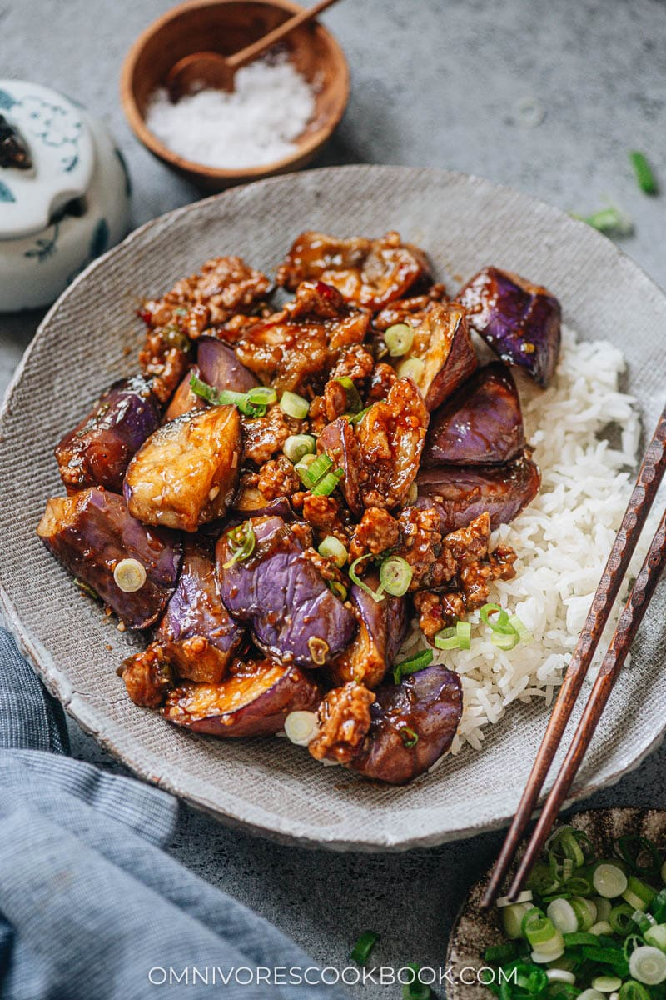

Yu Xiang Qie Zi

Description
Yu Xiang eggplant (鱼香茄子) is a "fish-fragant" eggplant stir fry from the Sichuan province. It balances sweetness with vinegar,
fermented spicy bean paste, and chillies in a dish that's bound to be a crowd favorite.
Ingredients
- 2 tablespoons Chinkiang vinegar
- 2 tablespoons sugar
- 1.5 tablespoons light soy sauce
- 1 tablespoon Shaoxing wine
- 2 green onions, sliced
- 2 cloves garlic, minced
- 1 tablesppon ginger, minced
- 8-10 dried Chinese chili peppers
- 1 tablespoons doubanjiang
- 2 Chinese eggplant
- 2 teaspoons cornstarch
Steps
- Generously salt eggplants in a large bowl and add water to cover. After 20 minutes, rinse the eggplant and dry well with papertowels.
- Add 3 tablespoons of oil to a large skillet and heat until hot. Add the eggplant in batches and cook until soft, stirring occassionally (5 minutes or so).
- Add all the eggplant to the skillet and add in the vinegar, sugar, soy sauce, shaoxing wine, doubanjiang, garlic, ginger, green onions and chili peppers.
- Make a cornstarch slurry with the cornstarch and 1-2 tablespoons of cold water. Add slurry to eggplant to thicken sauce